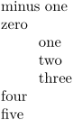

Syntax (autogenerated)
Syntax
| \noindenting |
Description
Deprecated. Equivalent to \setupindenting[no].
Example
-
minus one\par zero\par \setupindenting[yes, 20pt] one\par two\par three\par \noindenting four\par five\par
- 
See also
Help from ConTeXt-Mailinglist/Forum
All issues with: